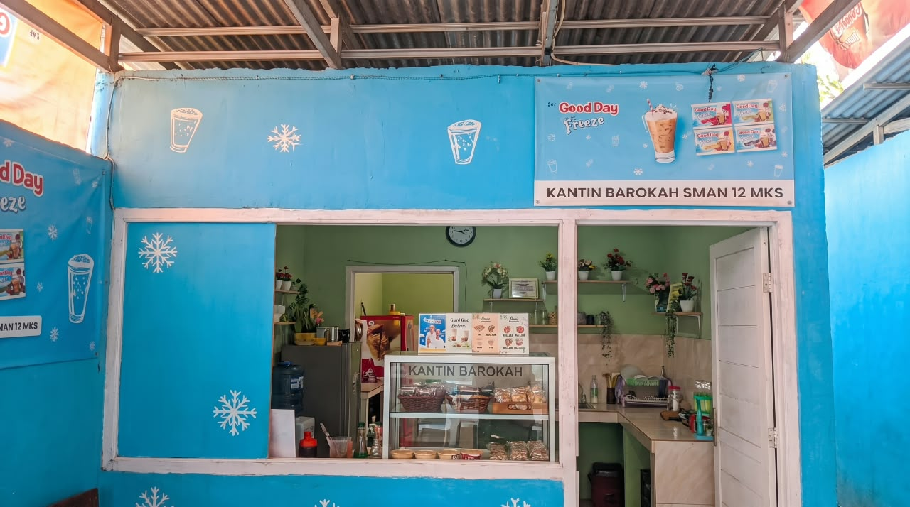

Pesan sebelum jam istirahat
Kurangi waktu antre, ambil langsung saat bel berbunyi.
Praktis & cepatTemukan makanan dan minuman favoritmu, cek promo hari ini, lalu pesan sebelum jam istirahat. Praktis untuk siswa, guru, dan seluruh warga SMAN 12 Makassar.

Kurangi waktu antre, ambil langsung saat bel berbunyi.
Praktis & cepatSemua dibuat sederhana agar tidak mengganggu waktu belajar.
Lihat menu dan harga yang tersedia di atas.
Tentukan jumlah makanan dan minuman.
Masukkan nama, kelas, dan waktu pengambilan.
Pesanan langsung terkirim ke pemilik kantin.
Kantin Barokah SMAN 12 Makassar membantu kantin sekolah tampil lebih modern tanpa menghilangkan suasana ramah kantin. Siswa dapat melihat menu, mengetahui harga, mendapatkan promo, dan melakukan pemesanan dengan lebih teratur.
Informasi aturan pemesanan secara online di Kantin Barokah SMAN 12 Makassar.
Tanya melalui WhatsAppBisa. Sistem ini dirancang untuk pre-order dan waktu pengambilan dapat disesuaikan dengan kebijakan Kantin Barokah.
Detail pesanan dikirim ke WhatsApp. Pembayaran dikonfirmasi langsung sesuai metode yang ditentukan pemilik Kantin Barokah (tunai/transfer).
Bisa. Semua menu dan harga dikelola secara terpusat dan dapat disesuaikan dengan kondisi terkini.
Sangat bisa. Dapat ditambah database, manajemen stok, dashboard admin, laporan penjualan, akun penjual, QRIS, dan payment gateway.
Data ini akan dikirim ke WhatsApp pemilik Kantin Barokah.